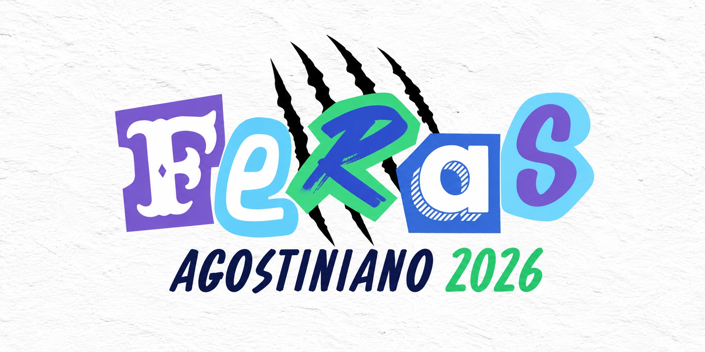

Professores
Professora Aryana
Todo ano, a Aryana escolhe uma música pra turma dançar no baile. Pros Feras 26, a escolha chegou de surpresa. É uma das tradições que a gente quis guardar aqui.
A música do baile
Goiânia, GOColégio Agostiniano3º ano · Turma 2026
Entrar no memorialDepois
do sinal
Dia
de trote
A foto
da turma
Antes do terceirão
Pra montar um vídeo da turma, os Feras pediram que cada um mandasse uma foto de quando era criança. Antes de aparecerem juntos nas fotos do terceirão, cada um tinha uma história bem diferente.
Colégio Agostiniano
Era onde a gente se encontrava antes de ir pra sala.
Abrindo os capítulos…
As fotos entram aqui conforme forem selecionadas.

Professores
Todo ano, a Aryana escolhe uma música pra turma dançar no baile. Pros Feras 26, a escolha chegou de surpresa. É uma das tradições que a gente quis guardar aqui.
A música do baileRepresentantes e vices
Os representantes reuniram os Feras numa comunidade. De um lado, os avisos dos últimos dias. Do outro, o Pátio, onde a turma podia conversar.
Funcionários
Quem ficava no portão, quem atendia na cantina e quem cuidava das salas também tem histórias desse ano.
Escrever uma homenagemCaderno de memórias
Um bordão que pegou, um intervalo que rendeu história, um gesto que só você viu. Escreve do jeito que você contaria pra alguém da sala.
No aviso do primeiro dia do ENEM, o encontro era às 7h30 no canto do pátio, antes de ir pro auditório.
O álbum reúne a Aula da Saudade e a pizzada, com fotos da turma no pátio.
A surpresa começou com a escolha da Aryana. A tradição termina na pista, com a turma dançando a música que ela escolheu.